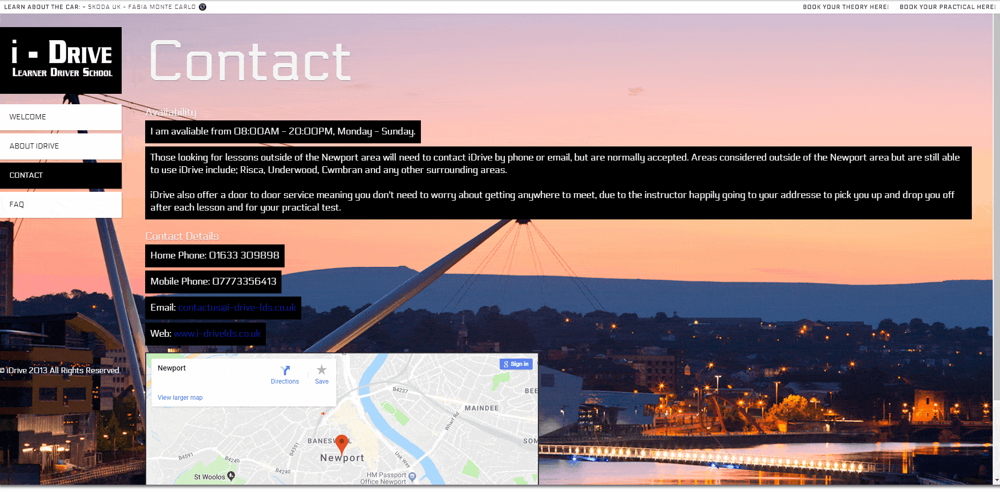
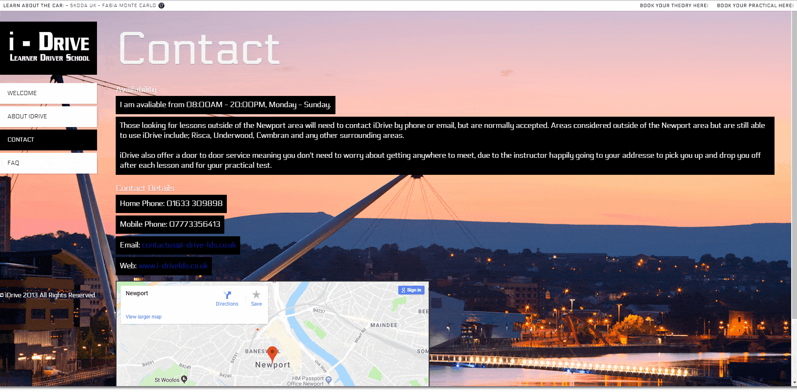

Aim:
I-Drive Learner Driver School is a start-up driving instruction school based in Newport, South Wales. Being the start-up of a relative I saw the opportunity to dive into web development for the first time on a more commercial scale to what I had previously done.
The site was aimed at pointing potential students in the right direction whilst giving a thorough detail on what is expected of them in terms of testing and lessons.
Time Period:
Given this was my first proper solo project and being a relative, the intended time period for completion was dependant on my ability to produce the site and when I felt confident it would satisfy the needs of the client.
In total the project took around 3 months to complete given my skill set and experience at the time.
Design:
The design of the site was simple utilising a single page design and then blocking each category into its own section. Given I was unexperienced in anything other than a simple box template design, I decided to explore and challenge myself to produce a more complicated design over my previous work.
Nav:
The navigation bar was placed as a sidebar over the conventional header space. This was due to incorporating a drop down box at the top of the screen that would drop in when the page was loading.
Drop Down:
The drop down is a simple bar used to navigate between external sources for booking your theory/practical tests and allowing you to see the car used by I-Drive. Always nice to know what you’re going to be driving I think.
Navigation Bar:
With the navigation bar on the side, it was simple enough to just incorporate the logo above with each link underneath. However, instead of using separate pages for the About, Contact etc… I used panels to keep the page loaded, saving on loading up different pages.
Layout:
The layout was very easy and similar to my previous work with just floats and a single container element to house all other items. This did allow for quick implementation on a full sized desktop screen, although this has no mobile implementation thus gives a very poor experience on anything less than a conventional desktop screen.
Overall I was fairly happy with the layout and given it was my first project outside of education I couldn’t have been happier to produce something for the world to see.
Colours:
Colours are generally a fickle thing when producing a website with no real concept designs to work from. As experienced with this design, I had done little to no concept work (Put this to my lack of experience shall we?) the colours were a bit iffy in the best of terms where some pieces of text blend in with the background and others don’t.
The idea was to keep the site as clean as possible using only blacks and whites similar to the logo however, I felt it left a lot of white space that could be filled with something more appealing to the eyes. Hence the use of a lovely background image of Newport itself. The issue with this? It left the white text difficult to read and vice versa with a black colour. So, I opted to include a background on each container for the text to make it more readable which worked flawlessly.
Stand Out Features:
- Image slideshow showing off the car used by I-Drive
- Interactive Google map giving the location of Newport
- Drop down bar with external links to the theory/practical site of the .gov website
 

Design Process Summary:
Reflecting on this design I feel a couple things could be switched up that allow for a more appealing look and user friendly experience.
Responsiveness:
Started with the mobile market would be the most influential aspect. By developing the site for a mobile audience to start and then porting that over to a desktop version would have been the correct procedure to follow. The biggest advantage of the mobile market for a driving instruction school is that the majority of potential clients see the driving instruction car and follow any links or number written on it rather than being at home and utilising a desktop.
Colour:
Colour stood out to be a bigger issue than anticipated for myself. Mainly due to the colour clashing with the whitespace or the image I decided to commit to after. Something I’d consider doing differently would be to sort a colour palette out with the intended background image, then create a template of 3-4 different designs I felt worked correctly.
Another possible option for the current design would be to utilise opacity, a very underused feature by myself up until my portfolio design.